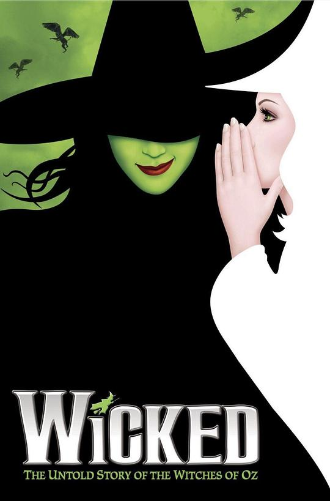

魔法坏女巫
团建选了看舞台剧/音乐剧的项目，是我第一次现场看舞台剧/音乐剧，演出效果非常棒，灯光、道具、音乐、歌声都非常精良，虽然没看过绿野仙踪，但是不影响理解故事。唱出来的故事倒是有点难听懂 _(:з)∠)_ 查了豆瓣才知道是百老汇演过的，每个地方都是当地的演员在演，悉尼这一组选的很棒 🤠 大城市的优势出来了
说过什么
2023-11-29 22:13:36
广播 · 看过 · ★★★★★
团建选了看舞台剧/音乐剧的项目，是我第一次现场看舞台剧/音乐剧，演出效果非常棒，灯光、道具、音乐、歌声都非常精良，虽然没看过绿野仙踪，但是不影响理解故事。唱出来的故事倒是有点难听懂 _(:з)∠)_ 查了豆瓣才知道是百老汇演过的，每个地方都是当地的演员在演，悉尼这一组选的很棒 🤠 大城市的优势出来了
最后一次看到是 2026-08-10T08:06:59+10:00 · 豆瓣原页